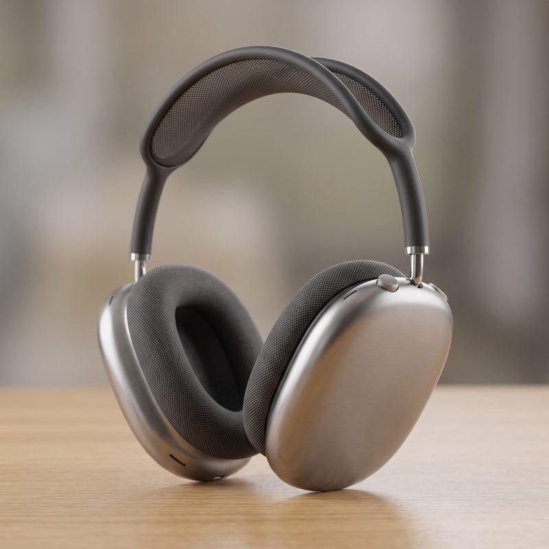

🐧 EVERYDAY LIFE⚡ 18 SEC
My top three buys of 2026, and headphones won 🎧
The Podium
My top 3 buys of 2026.
Third Place
3rd: Claude. It is really smart. In 2026 I paid for it all year.
🥉 THIRD
Claude
paid for it all year
🥈 SECOND
Mac mini
reachable from my phone, from far away

🥇 FIRST
AirPods Max
worries fly away
Second Place
2nd: Mac mini. I like that I can run Claude on it from my phone, from far away.
The Winner
1st: AirPods Max. If I listen to music with these, all my worries fly away.
PREVIOUS POST
I Played Pawapuro Again After a Long Time! 🎮